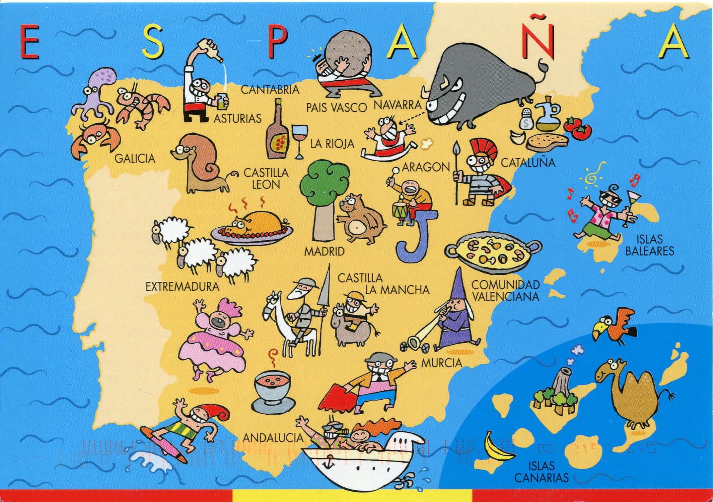
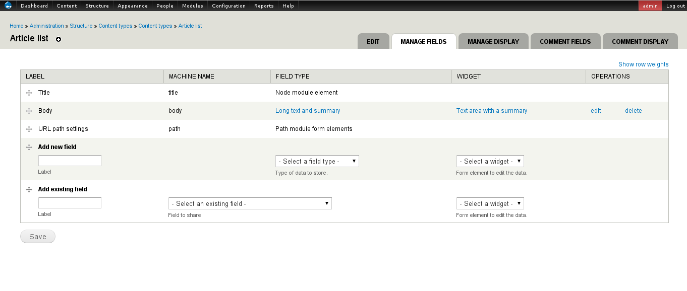
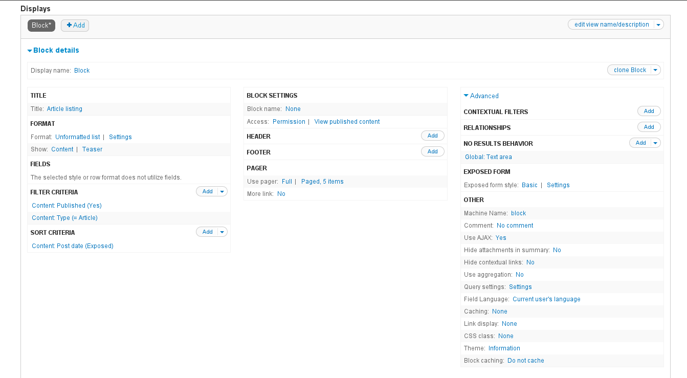
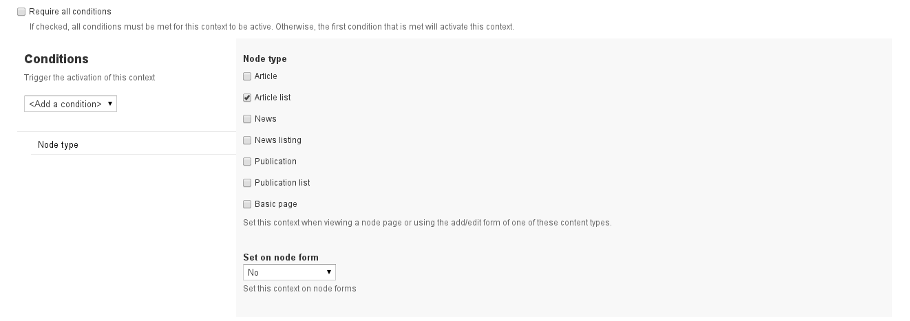
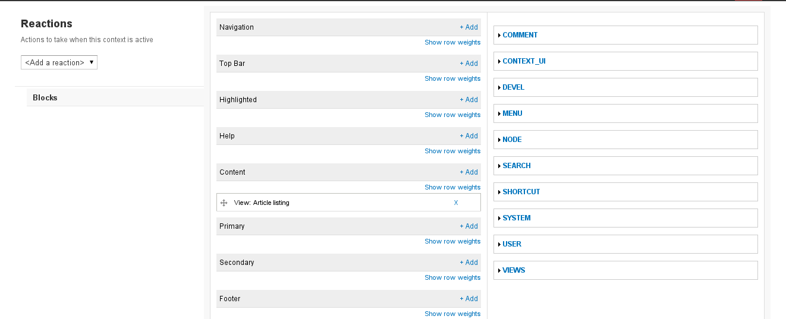
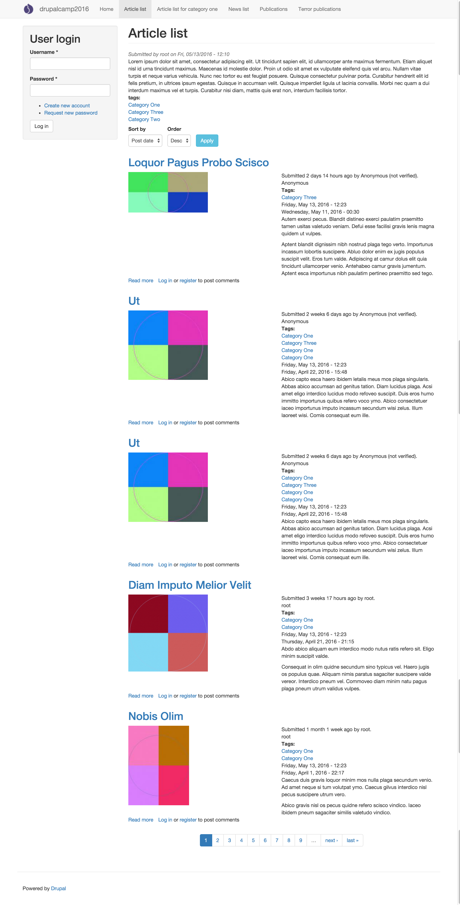
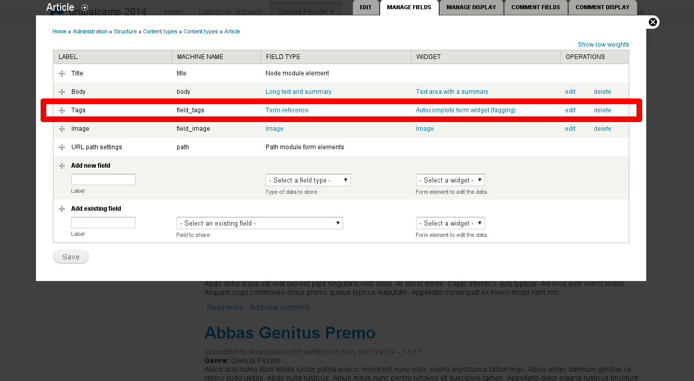
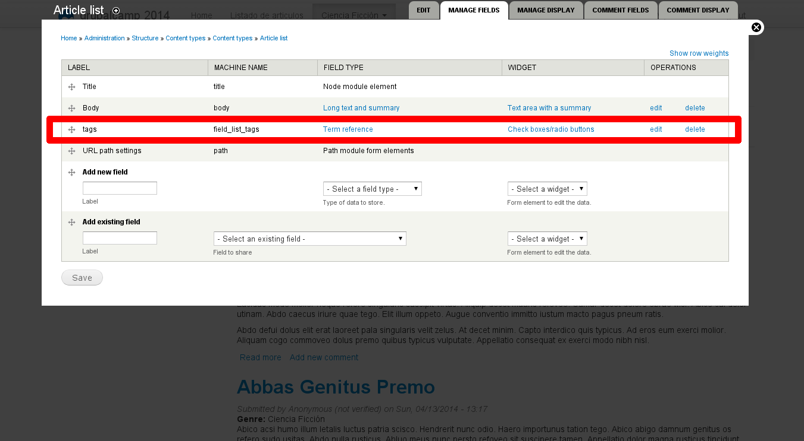

Carlos Carrascal - @ccarrascal77
[ ccarras6@its.jnj.com ]
[ carlos.carrascal@gmail.com ]
Carlos Carrascal Sánchez
@ccarrascal77
[ ccarras6@its.jnj.com ]
[ carlos.carrascal@gmail.com ]
[ http://www.carloscarrascal.com ]
Web developer
I have been working in IT since 1998, in different companies:
Mostly in Spain
Usually doing web development or CMS related, mostly with Open Source tools and GNU / Linux
We will develop a system that will allow our content editors, without any technical knowledge, to be able to create pages with lists in a simple and intuitive way, and with some degree of customization.
And more specifically:
We will use nodes that will display views showing other nodes, apply filters by content types, taxonomy terms, or any field values in those nodes.
Using the following components:
A Drupal 7 install with these modules:
Some advantanges are:
There is a contributed module to do almost the same thing that we are going to do by hand.
I would recommend to try it for something simple and easy, but for a bigger project, doing it ourselves will provide more customization.
Drupal has two basic functionalities for displaying content:
Traditionally, content display is handled and developed separately from the content lists.
Views configuration usually is far too complex for any user without technical knowledge.
We are trying to ease content management, allowing the editors to create listings by creating a special type of node, that will include a relevant list automatically.
First thing to create will be the content type that we want to show in the list.
For example we could use Article, from the default Drupal installation.
We can add and configure as many fields as we need in this content type.
For now, there is no other special feature that we need to consider for this content type.
If we are using Display Suite, we will configure at least two modes:
This is the content type used to display the list. As we are listing Articles, we could name it Article Listing.
For now we don't need to add any special field to this content type. We can have a Body field or not, if we want our lists to include some text.
Example: Content type Article Listing with default fields.
If we are using Display Suite, we will only need to enable Defautl or Full content modes, for the full node view.
It may be interesting to disable the option "Show in home page".
Now we will create the view to display the actual list. In our example, it will list nodes of Article type.
Block view for Article content type.
At last, we will use a Context to tie together the view and the Article listing node.
Context conditions to associate the view with the content type Article listing.
Context reactions for displaying the view into the Article listing content type.
Now, whenever an Article listing node is displayed, our new context will include the view in the desired region of our theme as a block. If we have a Content bottom region, for example, we can have the list below the node content.
List of nodes of Article type
To be able to create a filter for our list, we are going to create a taxonomy filter.
We will include term references in both the contents that we want to list and the listing nodes.
We will use the default Tags taxonomy.
Include a Term reference field in the Article content type, so we can filter them using the view.
We can configure the field with single or multiple values, autocomplete, check boxes, etc.
There is no mistery in adding a field to a content type.
We will also include a Term reference field in the Article listing content type, to use it as filter criteria.
Again, we can configure the field with single or multiple values, autocomplete, check boxes, or whatever.
No mistery here either, we have already seen this.
Add a Contextual filter of type Content: Has taxonomy term ID to the view.
This filter will only match when the article node has the same term that is set in the listing node.
These filters are usually passed to the view as a parameter in the URL, when the view is set as a page.
In this case, the trick is to specify a default value to be selected when the parameter is missing.
Using the option Taxonomy term ID from URL, we can set it to Load default filter from node page. By doing this, we are indicating the filter to look for the value in the node that is being displayed, that is, the value in the Tags field of the Article listing node.
This filter can be limited to a specific vocabulary, selecting one or more of them.
Another interesting option that will affect the results to display is using AND or OR as a condition when we have multiple terms to filter by.
At last, we can configure a value as an exception to skip the filter. When the view recieves this value, it will stop to apply the contextual filter, forcing it to display all results.
For taxonomy terms, we will need to use the term ID.
The following screen is an article list obtained by filtering with a taxonomy term.
We can also expose the filters we created to the final user, and they will be applied together with the contextual filter settings.
As we are displaying the view as a block, to work properly we need to enable AJAX option in the Advanced / Others section.
Set a filter in the usual way in the view, using the desired type: dates, field value, text, etc.
Expose the filter to the user. We can use Single, Grouped, or any combination we need.
We can also expose sort order criteria in the usual way, and let the user modify them.
In this list we can see the exposed form that includes the filters and sort order to the user.
Now that we have exposed filters in our listings, we can add some logic to it.
One interesting possibility is let the content manager choose which filters or sort criteria will be exposed to the user.
For this we will need to add some more fields to our Article listing content type, and use them to control how the filters works.
We will use a Boolean field for each of the filters that we want to be able to activate.
We should be already using Features module, but here we will use it to:
This is an example of all the components included into our newly created Feature.
We will use a hook to alter the exposed filters form and hide the ones that we don't want to be shown, as selected in the listing node.
We can implement hook_form_FORM_ID_alter.
In our code we will need to access the current node, and the simple way of doing this is using the node_load function.
Lets see an example implementation of this.
function cc_publication_form_views_exposed_form_alter(&$form, &$form_state) {
if ( $form['#id'] == "views-exposed-form-publication-list-block" ) {
$node = node_load(arg(1));
if ( $node->field_pl_expose_order['und'][0]['value'] == 1 ) {
$form['sort_order']['#title'] = 'Sort by' ;
} else {
$form['sort_order']['#title'] = '' ;
$form['sort_order']['#type'] = 'hidden' ;
}
if ( $node->field_pl_expose_author['und'][0]['value'] == 1 ) {
$form['field_pub_author_tid']['#title'] = t('Author') ;
} else {
$form['field_pub_author_tid']['#type'] = 'hidden';
$form['field_pub_author_tid']['#title'] = '';
$form['field_pub_author_tid']['#value'] = array() ; // Use and array for multiple selection
}
$form['sort_by']['#title'] = '' ;
$form['sort_by']['#type'] = 'hidden' ;
}
}
Ignacio Sánchez Holgueras
Carles Saport
José María Carnicero
David Bernal
Carlos Carrascal - @ccarrascal77
[ ccarras6@its.jnj.com ]
[ carlos.carrascal@gmail.com ]
[ @ccarrascal77 ]
GitHub Repository
https://github.com/ccarrascal/drupalcamp2014
{kind=link}
{kind=link}
{kind=link}
{kind=link}
{kind=link}
{kind=link}
{kind=link}